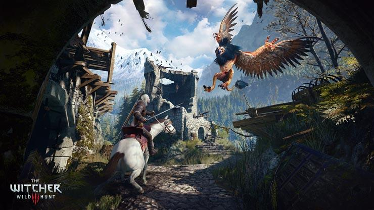

The Witcher 3
The Witcher 3 is an absolutely phenomenal third person RPG, it is critically acclaimed and is one of the
best selling RPGs of all time. It is the game that put CDPR (the developers) on the roadmap, and made the
a billion dollar company. In this game, you follow Geralt, a monster hunter as he travels his way across
the fictional country of Temeria, to kill various creatures and prevent the coming of the otherworldly Wild Hunt.
I have gotten over a hundred hours of playtime out of this game, on one save file. There is just so much to do, the main questline
is excellent, and the various side quests themselves are phenomenal. The two major DLCs for the game are also amazing
I would say each is worthy of its own game. If you are a fan of any or all of the following: RPGs, story-driven games,
gorgeous graphics, or gratuitous violence, you will absolutely love this game.